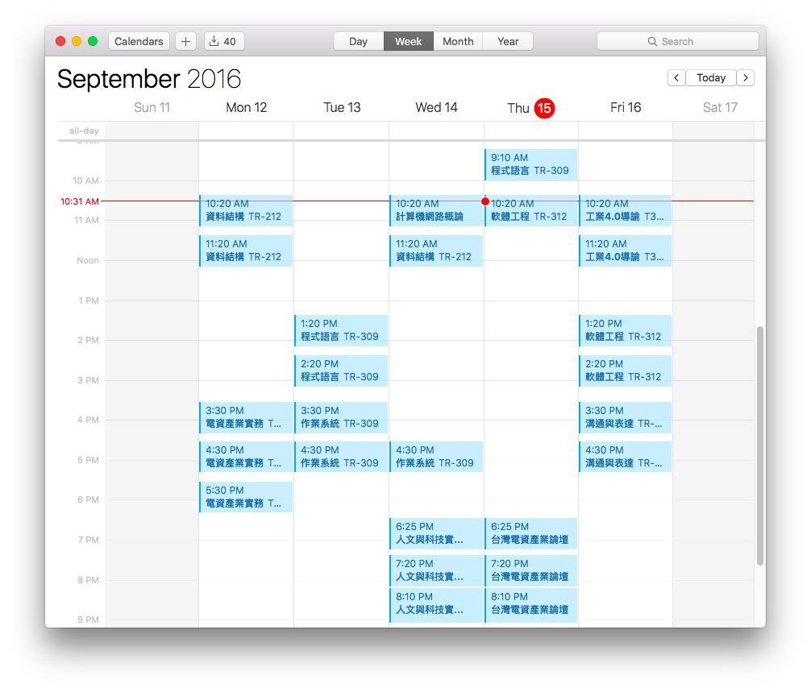
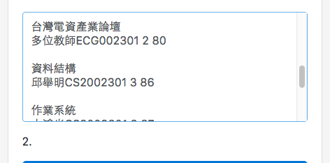
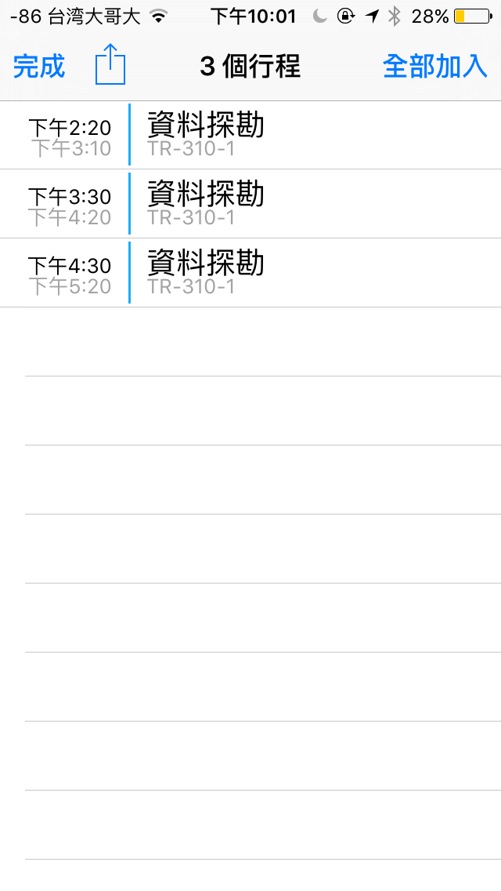
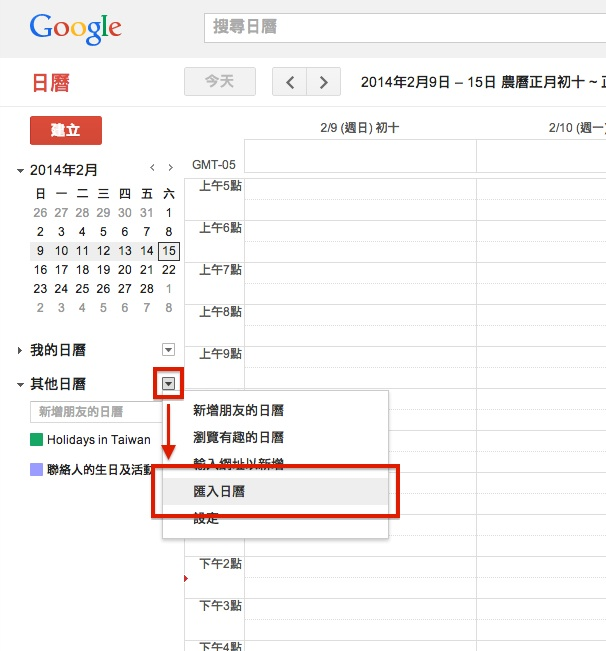
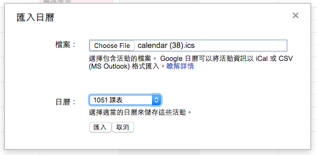
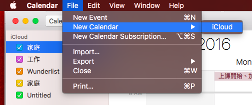
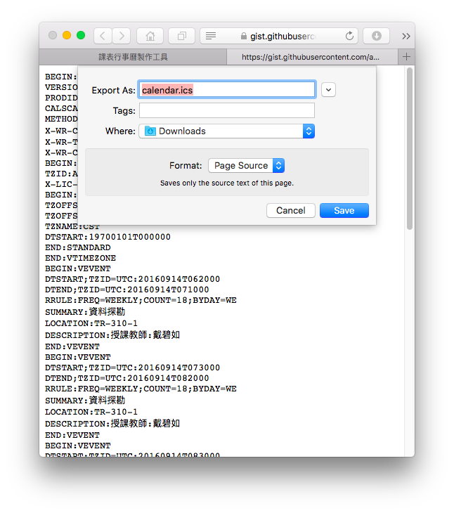

<!DOCTYPE html>
<html lang="zh-Hant-TW">
<head>
  <meta charset="utf-8">
  <meta name="viewport" content="initial-scale=1.0, user-scalable=no" />
  <!-- WARNING: for iOS 7, remove the width=device-width and height=device-height attributes. See https://issues.apache.org/jira/browse/CB-4323 -->
  <meta name="viewport" content="user-scalable=no, initial-scale=1, maximum-scale=1, minimum-scale=1, width=device-width, height=device-height, target-densitydpi=device-dpi" />
  <meta name="description" content="把學校課表匯進行事曆的工具，支援 iOS、Android、Mac 以及絕大多數行事曆軟體。資料包含上課地點及授課教師。">
  <title>課表行事曆製作工具</title>
  <script src="DIGEST(./vendor.js)"></script>
  <script src="DIGEST(./app.js)"></script>
  <link rel="stylesheet" href="DIGEST(./app.css)">
  <link rel="stylesheet" href="DIGEST(./font/octicons.css)">
  <script>require('app');</script>
</head>
<body>
  <script>
  (function(i,s,o,g,r,a,m){i['GoogleAnalyticsObject']=r;i[r]=i[r]||function(){
  (i[r].q=i[r].q||[]).push(arguments)},i[r].l=1*new Date();a=s.createElement(o),
  m=s.getElementsByTagName(o)[0];a.async=1;a.src=g;m.parentNode.insertBefore(a,m)
  })(window,document,'script','https://www.google-analytics.com/analytics.js','ga');

  ga('create', 'UA-49526118-8', 'auto');
  ga('send', 'pageview');
  </script>

<a href="https://github.com/Yukaii/ics-scheduler" class="github-corner" aria-label="View source on Github"><svg width="80" height="80" viewBox="0 0 250 250" style="fill:#0275d8; color:#f5f5f5; position: absolute; top: 0; border: 0; right: 0;" aria-hidden="true"><path d="M0,0 L115,115 L130,115 L142,142 L250,250 L250,0 Z"></path><path d="M128.3,109.0 C113.8,99.7 119.0,89.6 119.0,89.6 C122.0,82.7 120.5,78.6 120.5,78.6 C119.2,72.0 123.4,76.3 123.4,76.3 C127.3,80.9 125.5,87.3 125.5,87.3 C122.9,97.6 130.6,101.9 134.4,103.2" fill="currentColor" style="transform-origin: 130px 106px;" class="octo-arm"></path><path d="M115.0,115.0 C114.9,115.1 118.7,116.5 119.8,115.4 L133.7,101.6 C136.9,99.2 139.9,98.4 142.2,98.6 C133.8,88.0 127.5,74.4 143.8,58.0 C148.5,53.4 154.0,51.2 159.7,51.0 C160.3,49.4 163.2,43.6 171.4,40.1 C171.4,40.1 176.1,42.5 178.8,56.2 C183.1,58.6 187.2,61.8 190.9,65.4 C194.5,69.0 197.7,73.2 200.1,77.6 C213.8,80.2 216.3,84.9 216.3,84.9 C212.7,93.1 206.9,96.0 205.4,96.6 C205.1,102.4 203.0,107.8 198.3,112.5 C181.9,128.9 168.3,122.5 157.7,114.1 C157.9,116.9 156.7,120.9 152.7,124.9 L141.0,136.5 C139.8,137.7 141.6,141.9 141.8,141.8 Z" fill="currentColor" class="octo-body"></path></svg></a><style>.github-corner:hover .octo-arm{animation:octocat-wave 560ms ease-in-out}@keyframes octocat-wave{0%,100%{transform:rotate(0)}20%,60%{transform:rotate(-25deg)}40%,80%{transform:rotate(10deg)}}@media (max-width:500px){.github-corner:hover .octo-arm{animation:none}.github-corner .octo-arm{animation:octocat-wave 560ms ease-in-out}}</style>

<div class="container main">
  <div class="row">
    <div class="col-xs-12 col-m-8">
      <div class="card card-block">
        <h3 class="card-title">NTUST<br/>課表行事曆製作工具<span class="semester-date">1051</span></h3>
        <div class="card">
          
          <div class="card-block">
            <p class="card-text">這是一個把學校課表匯進行事曆的工具，有鑑於把課表手動輸入到行事曆實在有點慢，於是我們就做了這個工具。本工具產生的檔案格式，支援 iOS、Android、Mac 各平臺的行事曆。</p>
            <p>本工具有以下優點：</p>
            <ul>
              <li>不用另外裝軟體</li>
              <li>修改方便</li>
              <li>支援最好的線上行事曆服務 Google Calendar</li>
            </ul>
            <iframe src="https://ghbtns.com/github-btn.html?user=Yukaii&repo=ics-scheduler&type=watch" allowtransparency="true" frameborder="0" scrolling="0" width="60" height="22"></iframe>
            <iframe src="https://ghbtns.com/github-btn.html?user=Yukaii&repo=ics-scheduler&type=fork" allowtransparency="true" frameborder="0" scrolling="0" width="55" height="22"></iframe>
          </div>
        </div>
        <hr>
        <form>
          <div class="form-group">
            <h4>1. 貼上所有課程代碼，以空白分隔</h4>
            <div class="card">
              <div class="card-title">
              </div>
              
            </div>

            <p>可以登入 <a href="https://stu255.ntust.edu.tw/ntust_stu/stu.aspx" target="_blank">學生資訊系統</a> 或 <a href="https://crosslink.tw" target="_blank">Crosslink</a> 把選課資料全部複製貼上來。<a href="./images/how1.jpg">圖</a>。<a href="./images/how1-2.jpg">圖</a>。</p>

            <textarea class="form-control" id="raw-input-textarea" rows="7" placeholder="代碼請貼這裡" ></textarea>

          </div>
          <div class="form-group">
            <h4>2.</h4>
            <button type="submit" id="ics-generate" class="btn btn-primary btn-lg btn-block">按下去</button>
          </div>
        </form>

        <div class="form-group" id="download-group">
          <h4>3.</h4>
          <a id="ics-anchor" target="_blank" download="calendar.ics"><button class="btn btn-secondary btn-lg btn-block" disabled>先按上面那個</button></a>
          <div style="margin: 0 auto; max-width: 6em;">
            <a id="alternative-download-link" class="hidden" target="_blank">備用下載連結</a>
          </div>
        </div>
        <div class="form-group" id="instruction-group">
          <h4>4. 匯入行事曆</h4>
          <ul class="nav nav-tabs" role="tablist">
            <li class="nav-item">
              <a class="nav-link active" data-toggle="tab" href="#ios" role="tab">iOS</a>
            </li>
            <li class="nav-item">
              <a class="nav-link" data-toggle="tab" href="#google" role="tab">Google Calendar</a>
            </li>
            <li class="nav-item">
              <a class="nav-link" data-toggle="tab" href="#macos" role="tab">macOS</a>
            </li>
            <li class="nav-item">
              <a class="nav-link" data-toggle="tab" href="#safari" role="tab">Safari</a>
            </li>
          </ul>

          <!-- Tab panes -->
          <div class="tab-content">
            <div class="tab-pane active" id="ios" role="tabpanel">
              <p>用手機 Safari 開啟此網頁，依照步驟操作後，會跳出匯入畫面，如下圖。點「全部加入」即可，建議新增行事曆以方便整理</p>
              <a href="./images/ios-import.png" target="_blank"></a>
            </div>
            <div class="tab-pane" id="google" role="tabpanel">
              <p>如圖，點開「其它日曆」旁邊的倒三角選單，點「匯入日曆」，再選擇剛剛下載的 <code>calendar.ics</code> 檔案。</p>
              <a href="./images/how0-android.jpg" target="_blank"></a>
              <a href="./images/google-calendar-import.png" target="_blank"></a>
            </div>
            <div class="tab-pane" id="macos" role="tabpanel">
              <p>1. 建立一個新的行事曆以方便管理課表：</p>
              <a href="./images/macos-new-calendar.png" target="_blank"></a>
              <p>2. 點兩下剛剛下載的 <code>calendar.ics</code> 檔案，會跳出匯入視窗，選擇剛剛建立的行事曆匯入</p>
              <a href="./images/macos-import.png" target="_blank"></a>
            </div>
            <div class="tab-pane" id="safari" role="tabpanel">
              <p>若是用 macOS 桌面版 Safari 瀏覽器使用此工具，會直接在新分頁開啟 <code>calendar.ics</code> 檔案，需要手動另存新檔（⌘ + S 或 「檔案」「另存新檔」），再接續 macOS 步驟或是 Google Calendar 步驟完成匯入</p>
              <p>或是你直接換 Chrome 就可以正常下載了 😅 </p>
              <a href="./images/safari-import.png" target="_blank"></a>
            </div>
          </div>
        </div>
      </div>
    </div>
  </div>
</div>

</body>
</html>
